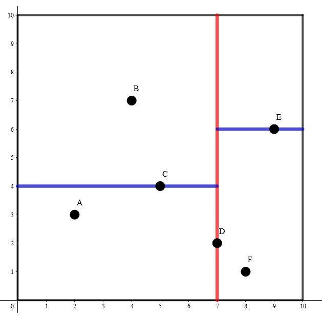
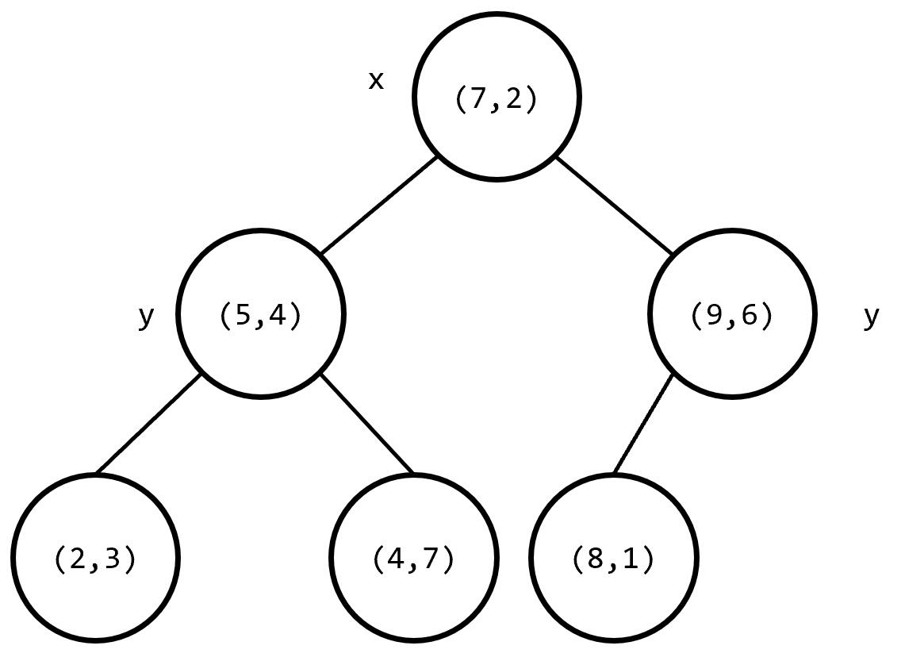

K-D Tree
k-D Tree(KDT , k-Dimension Tree) 是一种可以 高效处理
在结点数
在算法竞赛的题目中，一般有
建树
k-D Tree 具有二叉搜索树的形态，二叉搜索树上的每个结点都对应
假设我们已经知道了
-
若当前超长方体中只有一个点，返回这个点。
-
选择一个维度，将当前超长方体按照这个维度分成两个超长方体。
-
选择切割点：在选择的维度上选择一个点，这一维度上的值小于这个点的归入一个超长方体（左子树），其余的归入另一个超长方体（右子树）。
-
将选择的点作为这棵子树的根节点，递归对分出的两个超长方体构建左右子树，维护子树的信息。
为了方便理解，我们举一个

其构建出 k-D Tree 的形态可能是这样的：

其中树上每个结点上的坐标是选择的分割点的坐标，非叶子结点旁的
这样的复杂度无法保证。对于
- 轮流选择
个维度，以保证在任意连续 层里每个维度都被切割到。 - 每次在维度上选择切割点时选择该维度上的 中位数，这样可以保证每次分成的左右子树大小尽量相等。
可以发现，使用优化
现在，构建 k-D Tree 时间复杂度的瓶颈在于快速选出一个维度上的中位数，并将在该维度上的值小于该中位数的置于中位数的左边，其余置于右边。如果每次都使用 sort 函数对该维度进行排序，时间复杂度是
我们来回顾一下快速排序的思想。每次我们选出一个数，将小于该数的置于该数的左边，大于该数的置于该数的右边，保证该数在排好序后正确的位置上，然后递归排序左侧和右侧的值。这样的期望复杂度是 algorithm 库中，有一个实现相同功能的函数 nth_element()，要找到 s[l] 和 s[r] 之间的值按照排序规则 cmp 排序后在 s[mid] 位置上的值，并保证 s[mid] 左边的值小于 s[mid]，右边的值大于 s[mid]，只需写 nth_element(s+l,s+mid,s+r+1,cmp)。
借助这种思想，构建 k-D Tree 时间复杂度是
高维空间上的操作
在查询高维矩形区域内的所有点的一些信息时，记录每个结点子树内每一维度上的坐标的最大值和最小值。如果当前子树对应的矩形与所求矩形没有交点，则不继续搜索其子树；如果当前子树对应的矩形完全包含在所求矩形内，返回当前子树内所有点的权值和；否则，判断当前点是否在所求矩形内，更新答案并递归在左右子树中查找答案。
实现
int query(int p) {
if (!p) return 0;
bool flag{false};
for (int k : {0, 1}) flag |= (!(l.x[k] <= t[p].L[k] && t[p].R[k] <= h.x[k]));
if (!flag) return t[p].sum;
for (int k : {0, 1})
if (t[p].R[k] < l.x[k] || h.x[k] < t[p].L[k]) return 0;
int ans{0};
flag = false;
for (int k : {0, 1}) flag |= (!(l.x[k] <= t[p].x[k] && t[p].x[k] <= h.x[k]));
if (!flag) ans = t[p].v;
return ans += query(t[p].l) + query(t[p].r);
}
复杂度分析
先考虑二维的，在查询矩形
- 与
无交。 - 完全被
包含。 - 部分被
包含。
显然单次查询的复杂度是第 3 类点的个数。注意到第三类点的矩形要么完全包含
首先，我们不妨令矩形的所有边偏移
注意到互不包含的第 3 类点所对应的矩形，一定有
考虑对于某一个结点
而因为建树的时候，每个点是其整个子树在当前划分维度上的中位数，所以子树大小必定减半。于是，设
由主定理得
将递归式推广到
插入/删除
如果维护的这个
Note
很多选手会使用替罪羊树结构来维护。但是注意到在刚才的复杂度分析中，要求儿子的子树大小严格减半，即树高必须为严格的
根号重构
插入的时候，先存下来要插入的点，每
删除打个标记即可。如果要求较为严格，可以维护树内有多少个被删除了，达到
修改复杂度均摊
二进制分组
考虑维护若干棵
插入的时候，新增一棵大小为
容易发现需要合并的树的大小一定从
查询的时候，直接分别在每棵树上查询，复杂度为
例题
洛谷 P4148 简单题
在一个初始值全为
1 x y A：将坐标上的数加上 。 2 x1 y1 x2 y2：输出以为左下角， 为右上角的矩形内（包括矩形边界）的数字和。
强制在线。内存限制 20M。保证答案及所有过程量在 int 范围内。
20M 的空间卡掉了所有树套树，强制在线卡掉了 CDQ 分治，只能使用 k-D Tree。
以下是二进制分组的参考代码。
参考代码
#include <algorithm>
#include <iostream>
using namespace std;
constexpr int N(2e5), LG{18};
struct pt {
int x[2];
int v, sum;
int l, r;
int L[2], R[2];
} t[N + 5], l, h;
int rt[LG];
int b[N + 5], cnt;
void upd(int p) {
t[p].sum = t[t[p].l].sum + t[t[p].r].sum + t[p].v;
for (int k : {0, 1}) {
t[p].L[k] = t[p].R[k] = t[p].x[k];
if (t[p].l) {
t[p].L[k] = min(t[p].L[k], t[t[p].l].L[k]);
t[p].R[k] = max(t[p].R[k], t[t[p].l].R[k]);
}
if (t[p].r) {
t[p].L[k] = min(t[p].L[k], t[t[p].r].L[k]);
t[p].R[k] = max(t[p].R[k], t[t[p].r].R[k]);
}
}
}
int build(int l, int r, int dep = 0) {
int p{(l + r) >> 1};
nth_element(b + l, b + p, b + r + 1,
[dep](int x, int y) { return t[x].x[dep] < t[y].x[dep]; });
int x{b[p]};
if (l < p) t[x].l = build(l, p - 1, dep ^ 1);
if (p < r) t[x].r = build(p + 1, r, dep ^ 1);
upd(x);
return x;
}
void append(int &p) {
if (!p) return;
b[++cnt] = p;
append(t[p].l);
append(t[p].r);
p = 0;
}
int query(int p) {
if (!p) return 0;
bool flag{false};
for (int k : {0, 1}) flag |= (!(l.x[k] <= t[p].L[k] && t[p].R[k] <= h.x[k]));
if (!flag) return t[p].sum;
for (int k : {0, 1})
if (t[p].R[k] < l.x[k] || h.x[k] < t[p].L[k]) return 0;
int ans{0};
flag = false;
for (int k : {0, 1}) flag |= (!(l.x[k] <= t[p].x[k] && t[p].x[k] <= h.x[k]));
if (!flag) ans = t[p].v;
return ans += query(t[p].l) + query(t[p].r);
}
int main() {
int n;
cin >> n;
int lst{0};
n = 0;
while (true) {
int op;
cin >> op;
if (op == 1) {
int x, y, A;
cin >> x >> y >> A;
x ^= lst;
y ^= lst;
A ^= lst;
t[++n] = {{x, y}, A};
b[cnt = 1] = n;
for (int sz{0};; ++sz)
if (!rt[sz]) {
rt[sz] = build(1, cnt);
break;
} else
append(rt[sz]);
} else if (op == 2) {
cin >> l.x[0] >> l.x[1] >> h.x[0] >> h.x[1];
l.x[0] ^= lst;
l.x[1] ^= lst;
h.x[0] ^= lst;
h.x[1] ^= lst;
lst = 0;
for (int i{0}; i < LG; ++i) lst += query(rt[i]);
cout << lst << "\n";
} else
break;
}
return 0;
}
邻域查询
Warning
使用 k-D Tree 单次查询最近点的时间复杂度最坏还是
首先建出关于这
枚举每个结点，对于每个结点找到不等于该结点且距离最小的点，即可求出答案。每次暴力遍历 2-D Tree 上的每个结点的时间复杂度是
此外，还可以使用一种启发式搜索的方法，即若一个结点的两个子树都有可能包含答案，先在与查询点距离最近的一个子树中搜索答案。可以认为，查询点到子树对应的长方形的最近距离就是此题的估价函数。
参考代码
#include <algorithm>
#include <cmath>
#include <cstdlib>
#include <cstring>
#include <iomanip>
#include <iostream>
using namespace std;
constexpr int MAXN = 200010;
int n, d[MAXN], lc[MAXN], rc[MAXN];
double ans = 2e18;
struct node {
double x, y;
} s[MAXN];
double L[MAXN], R[MAXN], D[MAXN], U[MAXN];
double dist(int a, int b) {
return (s[a].x - s[b].x) * (s[a].x - s[b].x) +
(s[a].y - s[b].y) * (s[a].y - s[b].y);
}
bool cmp1(node a, node b) { return a.x < b.x; }
bool cmp2(node a, node b) { return a.y < b.y; }
void maintain(int x) {
L[x] = R[x] = s[x].x;
D[x] = U[x] = s[x].y;
if (lc[x])
L[x] = min(L[x], L[lc[x]]), R[x] = max(R[x], R[lc[x]]),
D[x] = min(D[x], D[lc[x]]), U[x] = max(U[x], U[lc[x]]);
if (rc[x])
L[x] = min(L[x], L[rc[x]]), R[x] = max(R[x], R[rc[x]]),
D[x] = min(D[x], D[rc[x]]), U[x] = max(U[x], U[rc[x]]);
}
int build(int l, int r) {
if (l > r) return 0;
if (l == r) {
maintain(l);
return l;
}
int mid = (l + r) >> 1;
double avx = 0, avy = 0, vax = 0, vay = 0; // average variance
for (int i = l; i <= r; i++) avx += s[i].x, avy += s[i].y;
avx /= (double)(r - l + 1);
avy /= (double)(r - l + 1);
for (int i = l; i <= r; i++)
vax += (s[i].x - avx) * (s[i].x - avx),
vay += (s[i].y - avy) * (s[i].y - avy);
if (vax >= vay)
d[mid] = 1, nth_element(s + l, s + mid, s + r + 1, cmp1);
else
d[mid] = 2, nth_element(s + l, s + mid, s + r + 1, cmp2);
lc[mid] = build(l, mid - 1), rc[mid] = build(mid + 1, r);
maintain(mid);
return mid;
}
double f(int a, int b) {
double ret = 0;
if (L[b] > s[a].x) ret += (L[b] - s[a].x) * (L[b] - s[a].x);
if (R[b] < s[a].x) ret += (s[a].x - R[b]) * (s[a].x - R[b]);
if (D[b] > s[a].y) ret += (D[b] - s[a].y) * (D[b] - s[a].y);
if (U[b] < s[a].y) ret += (s[a].y - U[b]) * (s[a].y - U[b]);
return ret;
}
void query(int l, int r, int x) {
if (l > r) return;
int mid = (l + r) >> 1;
if (mid != x) ans = min(ans, dist(x, mid));
if (l == r) return;
double distl = f(x, lc[mid]), distr = f(x, rc[mid]);
if (distl < ans && distr < ans) {
if (distl < distr) {
query(l, mid - 1, x);
if (distr < ans) query(mid + 1, r, x);
} else {
query(mid + 1, r, x);
if (distl < ans) query(l, mid - 1, x);
}
} else {
if (distl < ans) query(l, mid - 1, x);
if (distr < ans) query(mid + 1, r, x);
}
}
int main() {
cin.tie(nullptr)->sync_with_stdio(false);
cin >> n;
for (int i = 1; i <= n; i++) cin >> s[i].x >> s[i].y;
build(1, n);
for (int i = 1; i <= n; i++) query(1, n, i);
cout << fixed << setprecision(4) << sqrt(ans) << '\n';
return 0;
}
和上一道例题类似，从最近点对变成了
由于题目中强调的是无序点对，即交换前后两点的顺序后仍是相同的点对，则每个有序点对会被计算两次，那么读入的
参考代码
#include <algorithm>
#include <cstring>
#include <iostream>
#include <queue>
using namespace std;
constexpr int MAXN = 100010;
long long n, k;
priority_queue<long long, vector<long long>, greater<long long>> q;
struct node {
long long x, y;
} s[MAXN];
bool cmp1(node a, node b) { return a.x < b.x; }
bool cmp2(node a, node b) { return a.y < b.y; }
long long lc[MAXN], rc[MAXN], L[MAXN], R[MAXN], D[MAXN], U[MAXN];
void maintain(int x) {
L[x] = R[x] = s[x].x;
D[x] = U[x] = s[x].y;
if (lc[x])
L[x] = min(L[x], L[lc[x]]), R[x] = max(R[x], R[lc[x]]),
D[x] = min(D[x], D[lc[x]]), U[x] = max(U[x], U[lc[x]]);
if (rc[x])
L[x] = min(L[x], L[rc[x]]), R[x] = max(R[x], R[rc[x]]),
D[x] = min(D[x], D[rc[x]]), U[x] = max(U[x], U[rc[x]]);
}
int build(int l, int r) {
if (l > r) return 0;
int mid = (l + r) >> 1;
double av1 = 0, av2 = 0, va1 = 0, va2 = 0; // average variance
for (int i = l; i <= r; i++) av1 += s[i].x, av2 += s[i].y;
av1 /= (r - l + 1);
av2 /= (r - l + 1);
for (int i = l; i <= r; i++)
va1 += (av1 - s[i].x) * (av1 - s[i].x),
va2 += (av2 - s[i].y) * (av2 - s[i].y);
if (va1 > va2)
nth_element(s + l, s + mid, s + r + 1, cmp1);
else
nth_element(s + l, s + mid, s + r + 1, cmp2);
lc[mid] = build(l, mid - 1);
rc[mid] = build(mid + 1, r);
maintain(mid);
return mid;
}
long long sq(long long x) { return x * x; }
long long dist(int a, int b) {
return max(sq(s[a].x - L[b]), sq(s[a].x - R[b])) +
max(sq(s[a].y - D[b]), sq(s[a].y - U[b]));
}
void query(int l, int r, int x) {
if (l > r) return;
int mid = (l + r) >> 1;
long long t = sq(s[mid].x - s[x].x) + sq(s[mid].y - s[x].y);
if (t > q.top()) q.pop(), q.push(t);
long long distl = dist(x, lc[mid]), distr = dist(x, rc[mid]);
if (distl > q.top() && distr > q.top()) {
if (distl > distr) {
query(l, mid - 1, x);
if (distr > q.top()) query(mid + 1, r, x);
} else {
query(mid + 1, r, x);
if (distl > q.top()) query(l, mid - 1, x);
}
} else {
if (distl > q.top()) query(l, mid - 1, x);
if (distr > q.top()) query(mid + 1, r, x);
}
}
int main() {
cin >> n >> k;
k *= 2;
for (int i = 1; i <= k; i++) q.push(0);
for (int i = 1; i <= n; i++) cin >> s[i].x >> s[i].y;
build(1, n);
for (int i = 1; i <= n; i++) query(1, n, i);
cout << q.top() << endl;
return 0;
}
习题
创建日期: 2018年7月11日